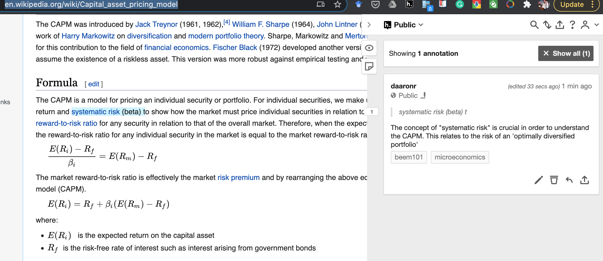

3 Preferences under uncertainty (and over time)
‘Expected Utility’; risk-aversion, finance and diversification; time-preference and discounting
Here we follow the order of O-R in covering preferences under uncertainty before consumer behavior and demand. Either ordering is possible, but the idea is to fully cover the ‘primitives’ of the model before considering it’s implications.
3.1 Introduction
Our previous discussion: Choices with known consequences
But in the real world many important economic decisions involve uncertainty.
Here: Choices with unknown consequences (but known probabilities of each outcome)
Adv: In the real world, people may also make choices in contexts with unknown probabilities; this is called ‘ambiguity’ or ‘Knightian uncertainty’. This is out of the scope of this module. (But this is the sort of extension that may motivate a good project).
How can we consider this in a choice (or utility-maximisation) framework?
The standard framework for this involves maximising ‘expected utility’.
Making choices to maximise expected utility is not the same as making choices to maximise expected monetary outcomes. This is one of the main points here.
Do not get this mixed up! You must understand this distinction to consider yourself an ‘intermediate microeconomist’ or better.
Some summary notes
Previously described utility functions: predict choices under certainty. They made no predictions for choices with uncertain probabilistic outcomes! In principle, we could allow any preferences over these ‘lotteries’, making no restrictions … each lottery might be valued by an individual in any way.
We will focus on the ‘Expected utility’ model of preferences.
True, people don’t “maximise expected monetary value”: they tend to be risk-averse. n Expected Utility (EU) framework, as defined below, allows for risk-aversion or any other attitude towards risky outcomes.
But EU does make some meaningful (and perhaps unrealistic) restrictions on preferences and choices, as the Allais paradox indicates.
Main Readings
Web book, and also…
- O-R Chapter 3: “Preferences under Uncertainty”
Feel free to skip the following (unfold)
Feel free to SKIP:
… the proof of propositions 3.2 (‘Continuity and independence implies EU’). It’s interesting but we can’t cover everything.
If you don’t understand the proof of prop. 3.3. (the equivalence of risk aversion and the concavity of the Bernoulli function) that’s also OK.
- McDL: 13.3 on ‘dynamic choice’
Other resources/references (unfold)
QMC: Ch 5, optimization and risk; selections (good discussion of diversification but doesn’t use utility functions)
DA: Lecture Note 16: Uncertainty, Risk Preference, and Expected Utility Theory
NS: Ch 4 (not including 4a)
McDL: Ch 13, section 4 ‘Risk Aversion’
Supplementary recommended readings:
Holt, C., and S. Laury (2002), Risk Aversion and Incentive Effects, American Economic Review, v. 92 (5): 1644-1655.
To add: other work on measuring risk aversion and the reliability of distinct measures
For a popular audience: Reinstein (2016) ‘Should you hedge your bets on a Brexit?’ LINK
3.2 Probability concepts and notation (including sums and integrals): a quick review
You must understand the logic and notation of probability to understand this (and much more material in your degree). If you already know this stuff, feel free to skip/skim.
- Probability (informal definition)
- The relative frequency with which an event occurs, or can be expected to occur.
- Always between 0 and 1
Note, there are some debates, e.g., between ‘Bayesians’ and ‘Frequentists’ over the meaning of probability.
Q: If \(p\) is the probability an event occurs, what is the probability this event does not occur?
Ans: \(1-p\)
If you didn’t find this obvious, I would suggest seriously revising simple probability, perhaps using the Khan academy materials.
Some of the discussion of these probability basics comes from Anne Greenbaum Wash U notes)
3.2.1 Discrete Random Variables
The O-R chapter on uncertainty considers only discrete ‘lotteries’ … those with a finite number of prizes. However, outcomes described by continuous random variables will likely come up in other material, and these are extremely important for Finance, as well as for Econometrics and many other fields.
A discrete random variable \(X\) takes on values \(x_i\) with probability \(p_i\), \(i=1, \ldots, m\), where \(\sum_{i=1}^{m} p_i = 1\).
For example, the outcome of a lottery ticket that pays a prize of £100 with probability \(\frac{1}{2}\), a prize of £10 with probability \(\frac{1}{10}\), and nothing (£0) with the remaining \(\frac{4}{10}\) … can be naturally expressed as a discrete random variable.
The expected value (EV) of a discrete random variable \(X\) is defined as
\[E(X) \equiv \langle X \rangle = \sum_{i=1}^m p_i x_i\]
…also called the mean of the random variable \(X\), denoted as \(\mu\).
Also see the ‘variance’ and other ‘moments’.
3.2.2 Continuous Random Variables
A ‘continuous random variable’ takes on any of an infinite number of values within a range.
An example: the possible exact duration of rainfall (in hours, seconds, milliseconds….) to fall on Exeter in Summer 2025 is most naturally expressed as a continuous random variable.
If you are not familiar with this concept, you should try to understand it, at least for your studies in general; consult Khan academy and other tutorials. This is a very important concept but takes some time to fully comprehend.
If it has no ’mass points’then we can only express the probability of it falling within an interval.
“Mass points” explained (unfold)
A “mass point” would describe a specific exact value of a continuous variable that occurs with a positive probability.
With rainfall and with most naturally occuring phenomena it is hard to imagine that this is possible.
But for ‘measured rainfall’ we might expect that there is a positive probability of ‘zero measured rainfall’.
Perhaps in the context of income it’s reasonable to expect substantial ‘mass points’ at round numbers … e.g., many people may earn exactly £50,000 per year.
Cumulative distribution function:
\[ F(x) \equiv \mbox{Prob}(X < x ),\]
This is essentially a function that specifies “the probability of random variable \(X\) falling (at or) below some level x.”
E.g., \(F_r(103.4) = \mbox{Prob}(X < 103.4 )\)…
“the probability of 103.4 hours or fewer of rainfall (\(X\)) in Exeter for Summer 2025”.
The probability density function (pdf).
\[ f (x)\,dx \equiv \mbox{Prob}( X \in [ x, x+\,dx ] ) = F(x+\,dx ) - F(x) .\]
This function is not really interpretable on its own. You might be tempted to read it as ‘the probability of exactly a certain value, such as ’exactly 103.4 hours of rainfall’, but this would be incorrect (unless we have mass points). It is best thought of as the ‘rate of change’ of the CDF, as the limit of the difference in the CDF function for each small interval.
Letting \(dx \rightarrow 0\):
\[ f (x) = F' (x) ,~~~F(x) = \int_{- \infty}^{x} f (t)\,dt .\]
The ‘standard normal density function’ is depicted below:

If a variable has this (or any) probability distribution, we can determine the probability that it falls in any particular region by computing the area under the curve between these regions, i.e., computing the integral between these regions.
For some distributions, like the normal distribution or the uniform distribution, we can compute all of these ‘analytically’, i.e., we have a formula. In other cases we will need to ‘simulate’ these through a process of drawing random numbers.
Below (link here), a very useful review of probability theory that also shows you how to compute and plot these using the R language.
You don’t need to learn how to compute these in R for this module, but it may aid your understanding, and may be helpful for your future work.
This material is from the web version of ‘Introduction to Econometrics with R’, Christoph Hanck, Martin Arnold, Alexander Gerber and Martin Schmelzer
knitr::include_url("https://bookdown.org/machar1991/ITER/2-1-random-variables-and-probability-distributions.html#probability-distributions-of-discrete-random-variables")The expected value (EV) of a continuous random variable \(X\) is then defined by \[ E(X) = \int_{- \infty}^{\infty} x f (x)\,dx .\]
Note that by definition, \(\int_{- \infty}^{\infty} f (x)\,dx = 1\).
- Expected value
- The ‘average outcome’ of an uncertain variable (general definition)
The average monetary (or goods) payoff from an uncertain gamble
The sum of the value at each possible outcome, weighted by the probability that outcome will occur
When outcomes are in a continuous space, e.g., the returns to a stock can take any of an infinite number of possible values, the expected value becomes a definite integral rather than a sum.
This is NOT the same as expected utility (coming up); people don’t necessary choose the investment with the highest expected value!
3.3 “Lotteries”
O-R, p. 31:
An alternative in the set involves randomness regarding the consequence it yields. We refer to these alternatives as lotteries. For example, a raffle ticket that yields a car with probability 0.001 and nothing otherwise is a lottery. A vacation on which you will experience grey weather with probability 0.3 and sunshine with probability 0.7 can be thought of as a lottery as well.
3.3.1 Formal definition of Lotteries (from O-R), explanation
Uncertainty, lotteries, and O-R notation:
In other texts you may see these referred to as “simple gambles”.
Let \(Z\) be a set (of prizes).
\(Z\) could be a list of amounts, say \(\{0,10,100\}\) or a list of bundles of goods, say {(nothing),(apple and carrot), (two carrots)}.
A lottery over \(Z\) is a function \(p : Z \rightarrow \mathbb{R}\)… that assigns a positive number (probability) \(p(z)\) to a finite number of members of \(Z\) and \(0\) to all other members,
Simplifying this, the probability function \(p\) ‘tells you the probability of each outcome (\(z\)) among the set of possible outcomes (\(Z\))’ for this lottery.
(Unfold for further explanation of this)with \(\sum_{z \in Z} p(z) = 1\).
The sum of the probabilities of each possible outcome must be 1… ‘one of the possibilities must happen’. (Note that this also implies that no individual probability can exceed 1, so \(0 \leq p(z) 1\) for all ‘possibilities’ \(z\).)
(Unfold)We denote the set of all lotteries over \(Z\) by \(L(Z)\)
For the example I give above, this means \(L(Z)\) is ’any possible lottery with some some probability of “apple and carrot”, some probability of “two carrots”, and (the remaining) probability of “nothing”. Each of these probabilities could be anything between 0 and 1.
the lottery that yields the prize \(z\) with probability 1 by [z]
\([z]\) represents a trivial case (sometimes called a ‘degenerate’ lottery). A ‘certainty’ is also a lottery, by this definition.
and the lottery that yields the prize \(z_k\) with probability \(\alpha_k\) for \(k = 1,..., K\)
I.e., each prize \(z_k\) occurs with probability \(\alpha_k\) … so \(z_1\) occurs with probability \(\alpha_1\), etc.
by \(\alpha_1 \cdot z_1 \oplus \alpha_2\cdot z_2 \oplus ··· \oplus \alpha_K \cdot z_K\)
This is a very handy notation but it needs some explanation (unfold).
We are trying to concisely depict a lottery with K possible outcomes (where K can be any number). Each of these possibile outcomes is indicated by \(z_1\), \(z_2\), … etc., all the way up to \(z_K\).
Each of these possibities has some probability of occuring. We denote these possibilities by \(\alpha_1\) for outcome \(z_1\), \(\alpha_2\) for outcome \(z_2\), etc.
E.g., for a two-outcome lottery, rather than writing ‘a lottery where outcome \(z_1\) occurs with probability \(\alpha_1\), \(z_2\) occurs with probability \(\alpha_2\), etc., we can simply write it as \(\alpha_1 \cdot z_1 \oplus \alpha_2\cdot z_2\). Here the \(\oplus\) means ’and also outcome…’ and the \(\cdot\) means ‘with probability’.
\(10 \cdot \frac{1}{3} \oplus 100\cdot \frac{2}{3}\)
Consider the diagrams in figure 3.1 in O-R. Can you explain what the points depicted mean? Could you depict the lottery \(\frac{3}{4} \cdot z_1 \oplus \frac{1}{4}\cdot z_2 \oplus 0\cdot z_3\) in a 3-D diagram similar to figure 3.1b? (by the way, this is called a ‘probability simplex’).
(Possible video here)
3.4 Preferences over lotteries
We now have the tools consider the question that motivated this: how might an individual choose among a set of uncertain choices, and what can we say about this?
Formally, what are the “preferences over the set of lotteries \(L(Z)\)” and “what restrictions over these preferences seem reasonable”?
DR Todo: I intend to add a video here discussing this… I want to convey why the ‘Expected Utility framework’ is not obvious.
O-R consider some ‘examples’ of preferences (or categories of preferences) over these lotteries that may seem rather extreme;
We might instead consider these as “simple decision rules” or “heuristics” rather than actual preferences. Behavioral economics considers that people may adopt such simplifying rules instead of maximizing perfectly in the complete set of alternatives, particularly because such maximization is mentally costly.
Of course it is doubtful that anyone completely has these preferences or follows these rules all the time. Still, it is instructive to consider what doing so would mean. It’s worth reading these definitions carefully, and then we can consider how these diverge from the “expected utility” framework we will discuss in a moment.
Ex. 3.1 “A pessimist”: Essentially, someone whose preferences among these lotteries simply depends on “which one has the worst possible outcome (\(w(p)\)) that is least bad”. (Where ‘worst’ is according to some particular ranking… which can have any form.)
Ex 3.2 “good and bad”: This person divides all possible outcomes into “good outcomes” and “bad outcomes” (in some particular way…there are many possibilities for doing this.) They simply prefer the lottery which has the highest probability of a “good” outcome (or conversely the lowest probability of a bad outcome).
TODO: I intend to include a video here discussing the ‘good and bad’ preference.
- Ex 3.3 minimizing options: This person doesn’t actually care about the content of any of the outcomes; they simpler prefer the lottery with the fewest possible outcomes.
This seems to me to be a sort of ‘opposite extreme’ to the pessimistic preference. While the pessimist is extremely sensitive to the very worst thing, the “good and bad” person is insensitive to whether the “good things” are ‘really good or just OK’ or whether the bad things" are really bad or just a bit mediocre.
3.5 Properties of preferences (over uncertainties) (O-R 3.2.1)
These properties will justify EU preferences. If you like, you may want to jump down to Expected utility first, and come back here, or watch this video
Some notation:
Lotteries \(L(Z)\) involve possible outcomes drawn from the ‘prize space’ \(Z\). E.g., a lottery could be a 0.25 chance of each of outcomes 0, 10, 100, and 1000, drawn from the ‘prize space’ \(\mathbb{R}^{+}\), the space of positive real numbers.
\(E(p)\) denotes (basically) the expected monetary value of the lottery.
O-R use brackets to denote a ‘certain outcome’,
e.g., \([b]\) represents ‘outcome \(b\) occuring with probablity one.’
TODO: I intend to include a video here going over the formal notation and understanding of each of these properties.
Continuity of VnM preferences
“Some probablistic mix of a great thing and a terrible thing will be as good as an OK thing”
More formally (from O-R):
For any set \(Z\) of prizes, a preference relation \(\succsim\) over \(L(Z)\) is continuous if for any three prizes a, b, and c in \(Z\) such that \([a] \succ [b] \succ [c]\) there is a number \(\alpha\) with \(0 < \alpha < 1\) such that \([b] \sim \alpha \cdot a \oplus (1 − \alpha) \cdot c\).

- Counterexample: Pessimistic preferences are not continuous (counterexamples help illustrate the ‘bite’ of a property)
Note that this definition of continuity is remeniscent but not identical to the definition of continuity for preferences over certain outcomes, which you may have seen before, and which we will return to in the next chapter. One difference is that here we are not considering making a bundle that is itself similar to bundle \(b\), but we are considering a probablistic conbination of two other bundles, a and b.
Def: Compound lotteries
- Important; might be considered an ‘algebra of finance’…
- a distributed format
- ‘sum product of x across all lotteries \(p_1...p_k\)’
Def: Independence
“If I prefer a particular (certain) \(A\) over a particular lottery \(B\), I also prefer to increase the probability of A over B… in a ‘compound lottery’”
- Counterexamples: pessimistic preferences, ‘minimizing options’
- Note how, in this case, a property over \(\succsim\) extends to \(\succ\)
Independence and pessimistic preferences are relevant to ‘population ethics’ and ‘effective altruism’ and ‘other-regarding preferences’, and ‘social welfare functions/social preferences’. E.g., sometimes we must decide between ‘making a big positive difference with a high probability’ (e.g., providing bednets to prevent malaria) and ‘making an extremely large positive difference with a very small probability’ (e.g., building a system to block an asteroid from destroying the earth).
Def: Monotonicity of VnM preferences
“A lottery (between two things) gets better as the better thing gets more likely”
- Independence implies monotonicity; this is a fairly easy and cool proof (check it out)
3.6 Expected utility
Expected Utility is the ‘most commonly assumed’ framework in economic theory. We will consider certain “axioms” that seem reasonable, particularly the ‘independence’ axiom. We can formally prove that “if people’s preferences obey these axioms, then their preferences must be ‘consistent with expected utility’”.
Again, this method… - Define axioms that seem reasonable - prove what this implies (in terms of ‘maximizing behavior’) … is sometimes called “normative Economics”. But this is confusing as “normative” is also used to refer to several other things. I hate that word!
For a more intuitive, less formal characterisation of Expected Utility, i.e., the ‘the von Neumann-Morgenstern utility function’, please see the McDL text on this.
However, Expected Utility preferences (choices) rules out some stated preferences (and choices) that seem common. We will see this in the “Allais Paradox”, for example.
Under this framework
When evaluating alternatives (or, if optimising, when making choices) involving uncertainty, she does not (necessarily) maximise expected monetary value.
Instead, she maximises ‘Expected Utility’ (EU): the sum of her (VNM) valuations ‘\(v(\cdot)\)’ under each outcome weighted by the probability of each outcome. (O-R refer to this as the Bernoulli function.)
I use the \(v(\cdot)\) function notation rather than \(u(\cdot)\) to differentiate the utility over a lottery in the EU framework (\(U\)) from the utility of one possible outcome of that lottery (\(v\)). However, in the EU framework we see that that the EU of a ‘degenerate lottery’ containing outcome \(z\) with probability 1 is simply \(U(p) = p_z \times v(z) = 1 \times v(z)\).
… I.e., she chooses to maximise the value of her \(v(z)\) function under each outcome \(z\) weighted by the probability of each outcome \(p_z\).
While I describe a set of countable alternatives, O-R define the below over the more general idea of a ‘set of lotteries \(L(Z)\) over prizes \(Z\)’.
Definitions:
Remember, each lottery \(p\) is a set of probabilities over each possible alternative. With a finite set of \(n\) alternatives \(z_1, z_2, ...,z_n\) we have probabilities \(p_1, p_2, ..., p_n\) over each.
Consider the “Expected Utility” function \(U\). This has a particular form. It is defined over each lottery \(p\) as:
\[U(p)= \sum_{i=1}^{n}p_i v(z_i)\].
Where \(v(\cdot)\) is a ‘value function’ (aka ‘sub-utility function’, aka ‘Bernoulli function’).
If an individual’s preferences (choices) are ‘consistent with this’,
so she always prefers (chooses) the lottery with the highest value of the above sum,
for some specific \(v\) function (which is the same \(v\) function across lotteries, of course),
… then we say she has ‘Expected utility’ (‘EU’, or von-Neumann Morganstern) preferences (if she chooses according to these preferences, she is an ‘EU maximizer’).
Note that the above does not specify what the \(v\) function must be. Obviously this may differ across individuals.
When we dealt with certainties, utility was ‘ordinal’. All we could say or know is whether “A yielded more utility than B or vice versa”.
However, if we assume EU preferences and focus on the \(v\) function, now the magnitude of the difference matters. Furthermore, it is now meaningful to consider the “curvature” of this \(v\) function in a single good which we could just call ‘wealth’.
Unfold for a further discussion of this; which may make more sense after reading further
With uncertainty, linear (affine) transformations of the \(v\) function represent the same preferences and thus lead to the same behaviour; nonlinear monotonic transformations may not.
Formally, if the VNM utility function \(v(\cdot)\) represents a set of preferences, the VNM utility function \(w(\cdot)\) represents the same preferences if and only if, for some scalar \(\alpha\) and some scalar \(\beta>0\)
\[w(g) = \alpha + \beta v(g).\]
Note that when we were choosing between two goods under certainty,
the level of total utility didn’t really matter, only the relative utilities. Now that we are considering gambles, the overall utility level matters, because we need to consider the extent of the tradeoff between ‘rich and poor’ states.
By varying the \(v(\cdot)\) function we can vary what we will define as the ‘risk preference’; …Risk-loving, risk neutral, and risk averse individuals can all be seen as maximizing EU, as discussed below.
3.7 Risk preferences
Consider the choice between two gambles and one ‘certainty’:
- Earn £1,000,000 with probability 0.1 & zero with prob. 0.9
- Earn £100,000 with probability 1/2 & £50,000 with prob. 1/2
- Earn £75,000 for certain
The decision among such lotteries depends on an individual’s preferences, in particular, her ‘risk preferences’. We divide up the space of possible preferences with the following definitions…
Definitions (loose):
- Risk Neutrality: a Risk-neutral person always chooses the option with the highest expected monetary value
Expected monetary value: the probability-weighted sum of the monetary outcomes. E.g., above, choice 2 as an expected monetary value of £100,000 \(\times \frac{1}{2}\) + £50,000 $ = $ £75,000.
Consider: what sort of \(v\) function, a function of monetary income, would have the property that
…. it implies that the expected utility (the probability-weighted sum of the \(v\) terms) of a gamble is always higher when the expected monetary value of this gamble is higher?
Answer: Such a \(v\) function must be linear (or affine);
it must take the form \(v(y)= a + by\) for some \(b>0\).
Can you prove this?
- Risk-Averse: a risk-averse person will always prefer a ‘sure thing’ over a ‘gamble with the same expected monetary value’
- She will always prefer gambles with less risk, holding the expected value constant
- She will always reject ‘fair gambles’ (see below) and prefer certainties
- To accept a (fair) gamble, she must expect a ‘risk-premium’
- A Risk-lover will always choose fair gambles over certainties, and sometimes choose a gamble that is unfair against her.
Formal definitions of risk preferences from O-R (emphasis added):
Recall that lotteries \(L(Z)\) involve possible outcomes drawn from the ‘prize space’ of positive real numbers. E.g., a lottery could be a 0.25 chance of each of outcomes 0, 10, 100, and 1000.
Recall ‘\([E(p)]\)’ denotes (basically) the expected monetary value of the lottery occuring with probability 1, a weighted sum or integral, formally \(E(p) = \sum_{z \in Z} p(z)z\)If \(Z = \mathbb{R}^{+}\) a preference relation on the set \(L(Z)\) of lotteries over \(Z\) is risk-averse if \([E(p)] \succsim p\) for every lottery \(p \in L(Z)\)
Of course it doesn’t have to be ‘monetary value’ … it could equivalently be a measure of the size of a bundle of goods.
So this defines risk averse as ‘weakly preferring a certainty to a lottery with the same expected monetary value’
is strictly risk-averse if \([E(p)] \succ p\) for every lottery \(p \i L(Z)\) that involves more than one prize,
and is risk-neutral if \([E(p)] \sim p\) for every lottery \(p \in L(Z)\),
Risk preferences and EU
Imagine the realised utility \(v(y)\) that arises from the consumption chosen with wealth \(y\). H$. ere we will express this as the (similar concept) ‘indirect utility function’ $V(y)
This is referred to as a ‘indirect utility function’, and sometimes written in capitals as \(V(y)\): an indirect utility function maps the utility that can be attained (assuming optimal choices) as we shift an individual’s wealth (and prices).
TODO: link notes on this
This should be increasing (because of nonsatiation, ‘more preferred to less’), thus (assuming differentiability) \(V^\prime (y)>0\)
But it may increase at a decreasing rate, implying \(V^{\prime \prime}(y)< 0\)
This second assumption, called diminishing marginal utility, will imply ‘risk aversion’! (This is a ‘sufficient condition’).
If the person is ‘risk-neutral’, it must be linear, thus \(V(y) = a + by\), thus \(V^{\prime \prime}(y)=0\)
3.7.1 Risk attitude: O-R formal depiction
Assume a ‘set of prizes \(Z\)’ that are (nonnegative) real numbers .. think of each prize \(z \in Z\) as some monetary reward.
We denote the expected value of any lottery \(p\) by \(E(p) = \sum_{z∈supp(Z)} p(z)z\)
This adds up every monetary prize in the ‘support of Z’ (i.e., those that occur with positive probability), weighted by their respective probabilities.
(Above quote is from O-R, page 40) If we have a continuum of prizes with some probability, we will depict this using a probability density function and the above will be expressed as a definite integral.)
O-R Definition 3.6: Risk aversion and risk neutrality
If \(Z = \mathbb{R_+}\), …
(real ‘money’ prizes)
… a preference relation \(\succsim\) on the set \(L(Z)\) of lotteries over Z
is risk-averse if \([E(p)] \succsim p\) for every lottery \(p \in L(Z)\),
(if the expected value of the certainty of a lottery is ‘at least as good as’ each lottery)
is strictly risk-averse if \([E(p)] \succ p\) for every lottery \(p \in L(Z)\) that involves more than one prize, …
(note the change to the \(\succ\) strict preference operator)
and is risk-neutral if \([E(p)] \sim p\) for every lottery \(p \in L(Z)\) …
O-R next state, and show, that risk-aversion is equivalent to the concavity of the Bernoulli function \(v\). The proof follows from a general math identity known as Jensen’s inequality, which essentially states that for concave functions ‘the function of the average of two arguments’ always exceeds ‘the average of the function of two arguments’.
This is easy to see for a graph with a single argument … connect two points on the ‘ceiling of a cave or a dome’ and note that the string connecting the two points is always below the ceiling.
Note that for smoothly differentiable functions (those with a second derivative) concavity is equivalent to a second derivative that is zero or negative.
For a very simple explanation of the relationship between the concavity of the utility function and risk preference, and a discussion of ‘why people buy insurance’ … see any of the many videos online, like This one by Ronald Moy
Further intuition and discussion
Coming back to the choice between two gambles and one ‘certainty’:
- \(Y_1\): £1,000,000 with probability 0.1 and zero with prob. 0.9
- \(Y_2\): £100,000 with probability 0.5 and £50,000 with prob. 0.5
- \(Y_3\): £75,000 for certain
Considering each outcome from any of these…
we know \(u(1,000,000) > u(100,000) > u(75,000)> u(50,000) > u(0)\)…
but now the size of the difference in these utilities matters for your decision!
Consider Y1 vs Y3: Is 1 million ‘more than ten times as good (utility-wise) as 75k?’
Y2 v Y3: Relative to 75k, does an additional 25k yield a utility gain worth the (equally probable) loss of 25k?
Illustration: Why the ‘size of the difference in u(y) matters’ when dealing with uncertainty.
Suppose there is Open Enrollment in Oxford, Bristol, Plymouth.
\(\rightarrow\) Here I only need to know the ranking of utilities of each to know your choices.
- If you choose Oxford over Bristol, even though Oxford costs more, I can infer that for you \(u(Oxford)>u(Bristol)\)
Now, in contrast suppose there is a “Lottery policy”, which is:
A. Rank Oxford over Bristol and you have a 25% chance of getting into either, and a 50% chance of Plymouth.
B. Rank Bristol highest and you have a 100% chance of getting into Bristol.
Now, suppose that I know that your preferences are Oxford \(\succ\) Bristol \(\succ\) Plymouth.
Do I now know whether you will choose A or B? What would it depend on?
No. I don’t know if you will choose A or B; I would need to know the strength of your preferences.
Your choices under the Lottery policy can be more informative.
If I observe that you choose ‘option A’ under the Lottery policy I have learned more about your utility than I learned under Open Enrollment.
I have learned that your preference for Oxford over Bristol is “stronger” than your preference for Bristol over Plymouth.
Intuition for ‘risk aversion iff concave value function \(v(\cdot)\)’
Risk aversion is defined (at least one definition) as being unwilling to take any “fair gambles” (gambles with an expected monetary value of zero) not even small ones. A risk averse person would never be willing to take on an equal probability of gaining a certain amount and losing that same amount. If they are “globally risk-averse” this holds no matter what level of income/wealth they start at, and no matter how large or small this amount is.
If the value function is strictly concave that means it is ‘everywhere increasing at a decreasing rate’. This means that, starting from a single point the rate of increase above this point is always lower than the rate of decrease below this point. A small loss is always at least somewhat more costly than a small gain of an equal monetary value.
Thus a risk-averse person would reject such gambles.
3.7.2 Graphical illustration of “risk aversion \(\leftrightarrow\) the value function \(v(\cdot)\) is concave” {-concave}

How to illustrate this:
TODO: I hope to include a video here
- Show: \(EU(gamble) = (1-p)u(x_{low}) + pu(x_{high}) < u(EV(x)) = u((1-p)x_{low} + px_{high})\)
Draw a diagonal line between \(u(x_{low})\) and \(u(x_{high})\); the Expected Utility is in between these.
To find this expected utility:
- Go horizontal distance \(p\) of the way between \(x_{low}\) and \(x_{high}\)
- Project up to the diagonal for the ‘average of functions (EU)’
This is a mathematical/graphical property we can easily prove.
Intuition: The slope of a line tells me ‘rise for a given run’, the ‘expectation’ calculation is a linear function, so the slope is constant and the ‘share of the rise’ simply projects up from the ‘share of the run’
- Compare this to the vertical height of utililty function at same point \((1-p)x_{low} + px_{high}\)
The result that the EV of the gamble is less than the EV of the certainty is actually a special case of Jensen’s inequality (unfold if you are interested )
For a strictly concave function \(f(\cdot)\) and for constant \(t \in [0,1]\)
\[f(tx_1+(1-t)x_2) > tf(x_1)+(1-t)f(x_2)\] …
extended to expected values for a random variable \(X\) …
\[f(E(X)) > E(f(X))\]

Note: You start with $35k


3.8 Allais paradox; considering other (non-EU) frameworks
Simple depiction of Allais paradox
Consider:
Scenario 2. Which would you choose?
- Gamble A: an 89% chance of winning £1 million, a 10% chance of winning £5 million, and a 1% chance of winning nothing.
- Gamble B: £1 million with certainty.
Write down (in Hypothesis): which would you choose?
Scenario 2. Which would you choose?
- Gamble C: an 89% chance of winning nothing and an 11% chance of winning £ 1 million.
- Gamble D: a 90% chance of winning nothing and a 10% chance of winning £5 million.
Write down (in Hypothesis): which would you choose?
Many people choose B over A and choose D over C. But look what this implies!!:
\[B \succ A \]
\[ £ 1m \cdot 1\succ £ 1m \cdot 0.89 \oplus £ 5m \cdot 0.1 \oplus £0 \cdot 0.01\]
At the same time…
\[D \succ C \]
\[(£ 0 \cdot 0.9 \oplus £ 5m \cdot 0.10) \succ (£ 0 \cdot 0.89 \oplus £ 1m \cdot 0.11) \]
i.e.,
\[ £ 1m \succ (£ 1m \cdot 0.89 \oplus £ 5m \cdot 0.1 \oplus £0 \cdot 0.01)\]
But this contradicts Expected Utility maximization:
If \(B \succ A\) then \(EU(A) > EU(B)\)
- \(\rightarrow u(1m) > 0.89 \: u(1m) + 0.1 \: u(5m) + 0.01 \: u(0)\)
- \(\rightarrow\) \(0.11 \: u(1m) > 0.1 u(5m) + 0.01 \: u(0)\)
Yet if \(D \succ C\) then \(EU(D)>EU(C)\)
- \(\rightarrow 0.9 \: u(0) + 0.1 u(5m) > 0.89 \: u(0) + 0.11 \: u(1m)\)
- Implying \(0.1 \: u(5m) + 0.01 \: u(0) > 0.11 \: u(1m)\)
- Contradicting the above!
More intuitively, note there is a ‘reversal’:
In choosing B over A you gave up a 10% chance of £5000 to get a 1% greater chance of £1000
… but in choosing D over C you gave up a 1% greater chance of £1000 to get a 10% change of £5000
For EU mazimization it shouldn’t matter that ‘for the remaining 89% of the time A differs from C’…. (unfold)
This is an ‘independent state of the world’; it should have no impact on your decisions for the remaining 11% of the time. Remember the ‘independence property’?
By this logic, the fact that there is a 10% chance that a meteor destroys England on Friday should not affect my choice
of whether to go to a fancy restaurant or get a simple curry on Friday in the 90% probability case that England is not hit.
Explaining it again with pie charts…

A is D plus an additional 89% chance of £1m
B is C plus an additional 89% chance of £1m
So “A and B” are “D and C” with additional 89% chance of £ 1m
EU is additive: \(\rightarrow\): {choice for remaining 11% state ignores difference
By the EU calculation I make choices over which I prefer for the (remaining) 11% of the time without considering what happens 89% of the time. ‘Independent states of the world’.
SO WHY do people choose B over A and D over C?
One theory: People may maximize something like EU but they get the probabilities wrong. They overweight small probabilities.
- \(\rightarrow\) Gamble A: the 1% chance of 0 is treated as larger?
Another theory:
People do not choose in a way that could be characterised as maximizing the probability-weighted sum of a value function over outcomes. They do not do anything that could be depicted as EU maximization. Instead, the assess gambles using other criteria, perhaps framing ‘reference points’, and ‘gains and losses’ relative to this reference point. We will (time permitting) return to this in our discussion of ‘prospect theory’ when we consider Behavioral Economics.
3.9 Experimental measures of risk attitudes
Economists try to measure people’s level of risk aversion in various ways.
We try to measure ‘revealed preferences’ from real-world choices. E.g., what premium are people willing to pay to buy insurance for various things, how much premium do they demand for taking on risky investments (with the same expected monetary values), and how much more do they have to be paid (on average) in jobs with variable compensation?
We also run experiments with real or hypothetical payoffs to measure this.
Although it is widely used, the validity of the Holt and Laury method is disputed, and there are alternatives.
One technique is the Holt and Laury (2002) risk elicitation task:

Asked to choose one in each row (A or B)
- Consider, when would you choose A and when would you choose B?

At what point do people switch from choosing the safe to choosing the risky lottery?
This is a measure of their risk-aversion. A risk-neutral person would switch to B on the fifth choice. The later you switch, the more risk averse you reveal yourself to be.

Above: Results for different ‘stake sizes’. Most people are risk-averse. People switch to the risky option later when stakes are higher.
However, although it has been the most widely used procedure, the Holt and Laury task has been widely criticized, both on theoretical and empirical grounds. There are a variety of proposed risk elicitation methods, as explored by Crosetto and Filippin (2016) and Charness, Gneezy, and Imas (2013).
It is not clear whether these ‘do a good job’. According to Charness et al, 2020 (Charness et al. 2020).
… these measures have some predictive power on behavior in experimental settings, and … the most complex procedure (TCN) is outperformed by simpler procedures. Finally, we find no correlation between field behavior and measures of risk attitude. This finding is confirmed for all of the implemented measures, either simple or complex.
However, the Charness et al ‘correlation’ results appear largely underpowered.
Other work finds that simple survey measures do a better job of predicting real world risk-taking behavior (Beauchamp, Cesarini, and Johannesson 2017; Lönnqvist et al. 2015).
3.10 Applications (esp. to finance):
How do we express and measure ‘risk aversion’?
How does this affect (financial, investment, insurance) choices? Why does ‘diversification improve outcomes for the risk-averse’?
How does this affect asset prices (Stocks, bonds, etc.) with ‘efficient markets’ (this will be briefly defined)
Benefits of diversification
See also QMC, chapters 5-6 for a fairly nontechnical and intuitive explanation.
Diversification: Buying multiple assets (with risks that are not perfectly correlated with one another)
- “Putting your eggs in multiple baskets” tends to reduce risk, holding expected monetary value of profit (returns) constant!
Illustration: Binomial distribution
- Suppose I have £ 1000, and I can bet on fair coin flips. My returns will then have what we call a “binomial distribution”.
Consider an illustration of binomial distributions
- If I bet all £ 1000 in a single flip, there is a 50% chance I will lose my entire investment.
- If I bet £ 500 on two flips, there is only a 25% chance I will lose my entire investment (also reduces chance of doubling by 25%).
- The expected value is the same (0); thus this is better if you are risk averse.
“Less risky”: B and A overlap with 0.5 probability; the remaining 50% of time A’s outcomes are more extreme. So it is less risky in a very general sense.
- If I bet £ 100 each in ten flips, there is a 38% chance that I will lose 20% or more of my investment.
- If instead, I bet it on 1000 coin flips, betting £ 1 on each, there is only 6.00% chance I will lose 5% of my investment or more, and only 1/10th of 1% chance that I will lose 10% of my investment or more.
You can check this, e.g., here
Result: The more I can do this “diversification”, the less risk I face.
Note: For simplicity, these examples have a ‘fair coin flip’, zero expected-return investment.
But you might be wondering: ’why invest at all?
Answer: Because this principle also applies to ‘unfair coin flips’.
E.g., investments in the stock market are more profitable on average than money under the mattress
Each £1 invested in shares has a higher expected return, but also a higher risk. However by spreading across many different assets we can reduce this risk, as seen above, maintaining the same expected returns.
Asset pricing and the CAPM (basic characterization)

Figure 3.1: Figure reprinted from Nicholson and Snyder, 2010
- Market line
- Shows the relationship between risk and annual returns that an investor can achieve by mixing financial assets.
With efficient markets, line depicts ‘best mix’: proportional to the total ‘market basket’, plus borrowing/lending at the ‘risk-free rate’
Note typo in diagram: ‘risk assets’ should be ‘risky’

Figure 3.2: Figure reprinted from Nicholson and Snyder, 2010
People may have different preferences for risk versus expected (average) return. (‘Risk’ is the overall variance around the average.)
The above assumes ‘optimal diversification’: no one chooses points below the market line.
Extension: “Capital asset pricing model” (CAPM)
This is the leading ‘baseline’ model in finance.
It assumes (or in fact, derives that) investors optimally diversify.
Holding the expected value of dividends constant, assets with higher market risk are less desirable, thus priced lower, and get higher returns
- Typical boring economist’s investment advice: diversify to mimic the ‘market basket’, choose funds with low fees
Thus assets are priced based only on ‘risk that cannot be diversified away from’, which is called ‘market risk’. The correlation between an asset’s return and the return of the ‘market basket optly diverse portfolio is sometimes called the asset’s ’beta’.
Holding the expected value of dividends constant, assets with higher market risk are less desirable, thus they are priced lower, and they gain higher returns.
The trade-off between this risk and return has a linear relationship, i.e., the (‘security market line’)[https://en.wikipedia.org/wiki/Security_market_line] has a constant slope.
Why, according to this model, is there a ‘return to market risk’ that is constant across all assets? The answer has to do with leveraging or de-leveraging using a ‘risk free asset’, and arbitrage. See my hypothes.is comment here
Confusing matters further, in some discussions, the slope of the returns in the the market risk is referred depicted as a coefficient \(\beta\).
You will also hear “Alpha” referred to, representing the intercept and and to depict the excess return of an asset over and above what would be predicted by its market risk. People who claim to be able to beat the markets will flex about their ‘high Alpha’. But maybe they are just lucky.
See also QMC, chapters 5-6 for a fairly nontechnical and intuitive explanation.
Are you interested in finance and investment? You should aim to gain a solid mathematical understanding of the CAPM model, which is the basis of modern portfolio theory.
Wikipedia on ‘Capital_asset_pricing_model’ is a good starting point. Note that I am leaving comments on this page using the Hypothes.is tool with tags ‘microeconomics’, ‘beem101’ and ‘capm’.
Please install a hypothesis.is plugin into your browser, and then read and interact!

Also leaving comments on wiki articles on :


Please interact!
This is also potentially relevant to Midterm coverage, or to your project, if you choose to go in this direction.
Options contracts moved to supplement
For time concerns, we will not cover options contracts in Beem101 for 2020. This section has been moved into the supplements HERE.
3.11 Measures of risk preferences, further characterizations
CARA, CRRA
Certainty equivalent
Content to be added here, drawing from McDL section 13.4.
3.11.1 ‘Certainty equivalent’ of a gamble, ‘Risk premium’
From McDL
The certainty equivalent is an amount of money that provides equal utility to the random payoff of the gamble. The certainty equivalent is labeled CE in the figure. Note that CE is less than the expected outcome, if the person is risk averse.
Figure 3.3: Diagram rom McDL
The risk premium is defined to be the difference between the expected payoff (this is expressed as $x_1 + (1 – )x_2 in the figure) and the certainty equivalent.
… the amount of money an individual would be willing to pay to avoid [this particular] risk.
Of course the risk premium needs to be expressed as a function of a particular gamble … a larger amount at risk will presumably demand a higher premium from a risk-adverse person.
But consider the amount you would need to pay an extremely poor person to be willing take a coin-flip gamble over winning/losing £100. Now consider the amount you would need to pay a University Vice-Chancellor to take this risk. Would these amounts be the same? I.e,. as McDL ask:
How does the risk premium of a given gamble change when the base wealth is increased?
We might imagine think the risk premium (for any particular gamble) would fall as wealth increases. This depends on a particular condition on the curvature of the value function:
It can be shown that the risk premium falls as wealth increases for any gamble, if and only if \(−v''(x)/v′(x)\) is decreasing [in \(x\)].
My attempt at intuition. Note that the value function is always assumed to be increasing in \(x\), essentially monotonicity. Thus \(v'(x)\) >0$ at all points.
For a risk averse person (someone who is ‘everywhere risk averse’) this rate of increase, this ‘marginal utility of income in a particular state’, is decreasing in income. Thus each additional unit of income yields less and less additional value. Thus, as \(v'(x)\) is decrease in \(x\) we know \(v''(x)\) is negative.
So what about the negative of ratio \(−v''(x)/v′(x)\) … the negative sign up front makes it positive – this is just to make it a simpler intuitive measure of ‘more risk aversion’. But what does it mean? Well, what will a risk premium depend on?
The ‘price’ of additional value at point \(x\) depends on the marginal value of income, \(v′(x)\). If I need to be ‘given more utility to make up for the cost of taking on a small risk’, this required payment (in income) will depend on \(v′(x)\) at this point. This is in the denominator as it’s a ‘price per unit of value’.
The ‘cost’ of taking on a small risk at a certain point \(x\) is that the value benefit of winning a small amount \(\epsilon\) (from increasing your income past this point) is less than the cost of losing this \(\epsilon\) amount. The difference in these depends on ‘how much shallower \(v(x)\) gets’, i.e., ‘how much does \(v'(x)\) change’ as I increase income a tiny bit from point \(x\). But this difference is precisely \(v''(x)\).
So perhaps we can think of the above ratio as the ‘cost of taking on \(\epsilon\) risk’—the numerator, as measured in units of the ‘price of additional value … (needed to compensate this)’— the denominator.
If the utility of taking on additional \(\epsilon\) risk, as measured in terms of the price of compensating price this utility loss, is decreasing in wealth, then wealthier people will demand a smaller risk premium for the same small bet.
Anyways, this ratio is also referred to as the (Arrow-Pratt) ‘coefficient of absolute risk aversion’.
Local measures of risk-aversion
- Coefficient of absolute risk aversion in income or weath \(m\): \(A(m) \equiv -\frac{u''(m)}{u'(m)}\)
Note this is ‘preserved under an affine transformation’; it is only affected by things that affect preferences (see indifference curves), not by ‘the same preferences represented by a different utility function’.
Note that the value of this measure itself may be constant, decreasing, increasing in income…
I say ‘local’ because these measures need not be constant. However, using differential equations we can derive a ‘constant absolute risk aversion’ utility function, also known as ‘Exponential utility’
\[u(m) = 1 - exp(-\alpha m)\]
This ‘CARA’ utility is convenient for constructing and solving models, as we don’t need to consider how risk preferences (and choices people are willing to make) changes with higher or lower wealth (perhaps as a consequence of policies). However, I suspect most people would not find it realistic. McDL report:
An important aspect of CARA with normally distributed risks is that the preferences of the consumer are linear in the mean of the gamble and the variance. Such preferences are often called mean variance preferences, and they describe people who value risk linearly with the expected return. Such preferences comprise the foundation of modern finance theory
Perhaps a more informative measure pertains to the willingness to take risks as a share of one’s income:
- Coefficient of relative risk aversion: \[R(m) \equiv mA(m)=-\frac{mu''(m)}{u'(m)}\]
This also need not be constant in income, although it seems more plausible to assume that it is. It is only constant if utility is of the ‘isoelastic’ form
\[u(w) = \frac{m^{1- \rho} - 1}{1-\rho}\]
… Note that for the above utility function \(R(m) = \rho\) (and this it is constant).
Note that these ideas are also relevant to intertemporal substitution and to social welfare functions. The way we depict utility and preferences over time is similar to the way we depict preferences over uncertainty. This sometimes makes it hard to separate the two in empirical studies and applied questions.
For these measures
RRA (ARA) constant \(\rightarrow\) constant fraction of portfolio (number of dollars) held in risky asset as wealth increases.
These measures are discussed very neatly in the video below, giving some specific parametric examples. However, he never explains exactly what the ‘units’ here are. What exactly do \(A(W)\) and \(R(W)\) measure?
‘Prudence’
Surprisingly, it does not imply this; it can go either way. Why?
Consider the case with two state of the world, “good and bad”. Imagine each occur with some probability, perhaps \(\frac{1}{2}\).
Consider two people, Sam and Rick, with the same expected value income of 50 ‘next year’. Suppose both have the exact same risk-averse utility function.
However, Rick faces a much greater variance of income than Sam. Suppose Rick gets income 10 half the time and 90 half the time, while Sam gets 40 half the time and 60 half the time.
Now suppose each is considering how much of “this year’s” income to lay aside for next year, at the cost of less pleasure this year. (I may not have covered utility across time and discounting yet, but I think you will get the idea.)
Who will find it more important to put aside money, Sam or Rick? … think and unfold.
The answer: not enough information to say either way.
With diminishing returns to income (each year)…
For the 50% ‘bad state of the world’ (where they have a lower income), the additional savings is more valuable to Rick than to Sam, as increasing from 10 to 11 (say) yields more utility gain than increasing from 40 to 41.
However, for the 50% ‘good’ state of the world, the additional savings is less valuable to Rick than to Sam, as an increase from 90 to 91 is worth less utility than an increase from 60 to 61.
So we don’t know without more information about their value functions.
Economists have a particular definition of something called “Prudence”.
This is something economists do. We take a normal word and we define it with a particular mathematical meaning that may or may not agree with most people’s common sense of that word is.
We define someone as prudent if they are risk-averse and if \(v'''(y)<0\). That’s right, even the third derivative matters, and has an interpretation!
Prudence implies that risk is less painful at higher incomes. This implies that I will save more when facing greater risk.
That might seem the obvious choice to you, in spite of the above discussion. If so, congratulations on knowing the sign of the third derivative of your value function!
3.12 Time preferences and discounting
(To be added, partly from McDL: 13.3 on ‘dynamic choice’)
Economists often consider preferences over time using nearly the same framework that they use for considering preferences over uncertainty.
We ‘sum a sequence of weighted payoffs’ in both cases … for uncertainty we weight by probability…
For time-preferences we (might) consider ‘discounting’ future payoffs.
(Some discussion: (when) should we ‘discount future payoffs’?)
Individuals might discount future “pleasure”:
because they might not survive to the future (although this should enter in as a ‘survival discount’ tied to the probability of surviving)
because they are impatient (but this is potentially not in their own interest).
But other than this, it is not entirely clear why this discounting makes sense. Why should I value ‘a unit of utility’ in the future less than a unit today?
Discounting future income is much more reasonable, and Individuals may discount future ‘income’ (in currency, inflation-adjusted) or ‘physical consumption’
If we think the ‘future me’ will be wealthier than the present me (consumption smoothing)
Or if we think I will be less sensitive to pleasure/pain
Suppose an individual has concave payoffs (utility), perhaps a slope of the value function \(v(x)\) (aka the ‘utility of income’ function) with a positive first derivative and a negative second derivative. They are ‘risk averse’ as defined above.
Risk:
If there are two possible state of the worlds (a coin flip, heads or tails, each with probability \(1/2\))…
if this person is an ‘expected utility maximiser’, when choosing among lotteries with the same expected monetary payoffs, they prefer the lottery where the payoffs in each state are as similar as possible. Equivalently, if they start with a certain income they will ‘reject all fair gambles’.
If they can divide a fixed income \(m\) between the ‘heads’ and ‘tails’ states, they would divide it equally, setting \(x_{heads} = x_{tails} = m/2\). This will maximise their ‘expected utility’ \(\frac{1}{2} v(x_{heads}) + \frac{1}{2} v(x_{tails})\)
Time:
Analogously, suppose there are ‘two periods’, ‘Period 1’ and ‘Period 2’, that the same individual must divide a fixed income between (\(x_1\) in period 1 and \(x_2\) in period 2). Assume they do not ‘discount future utility’. The ‘utility of income function in a period’ (equivalent to \(v(x)\)) is the same in every period. Thus their ‘total stream of utility’ simply adds the utility in each period:
\(u(x_1, x_2) = v(x_1) + v(x_2)\).
Suppose they can divide a fixed income \(m\) to be used for consumption in either of the two periods (so \(x_1+x_2=m\)).
This is equivalent to the above ‘Risk’ problem, with the same concave value function. Thus, they will again divide the consumption equally, setting \(x_{1} = x_{2} = m/2\).
Note there are some criticisms of the standard ways in which both risk-preferences and time-preferences are handled. There is evidence suggesting people do not treat these tradeoffs equivalently. See, e.g., Andreoni and Sprenger
When there are diminishing returns to consumption in every period (or in every state) and income can be freely shifted from one period (or equi-probable state) to another, and there is no ‘discounting’, the individual will set the consumption equal in every period (or state). This is called ‘consumption smoothing’.
Because of this, the standard economic prediction is that a one-time increase in wealth will have only a small effect on consumption in that period. A general ‘consumption smoothing’ result also applies when there is discounting, but somewhat less consumption applied to later periods… the ratios of the marginal utilities multiplied by the discount factors will be set equal.
References
Beauchamp, Jonathan P., David Cesarini, and Magnus Johannesson. 2017. “The Psychometric and Empirical Properties of Measures of Risk Preferences.” Journal of Risk and Uncertainty 54 (3): 203–37.
Charness, Gary, Thomas Garcia, Theo Offerman, and Marie Claire Villeval. 2020. “Do Measures of Risk Attitude in the Laboratory Predict Behavior Under Risk in and Outside of the Laboratory?” Journal of Risk and Uncertainty 60 (2): 99–123. https://doi.org/10.1007/s11166-020-09325-6.
Charness, Gary, Uri Gneezy, and Alex Imas. 2013. “Experimental Methods: Eliciting Risk Preferences.” Journal of Economic Behavior & Organization 87: 43–51.
Crosetto, Paolo, and Antonio Filippin. 2016. “A Theoretical and Experimental Appraisal of Four Risk Elicitation Methods.” Experimental Economics 19 (3): 613–41. https://doi.org/10.1007/s10683-015-9457-9.
Lönnqvist, Jan-Erik, Markku Verkasalo, Gari Walkowitz, and Philipp C. Wichardt. 2015. “Measuring Individual Risk Attitudes in the Lab: Task or Ask? An Empirical Comparison.” Journal of Economic Behavior & Organization 119: 254–66.